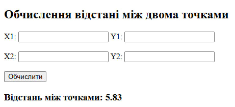
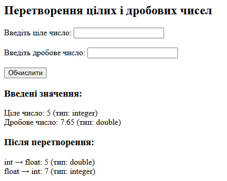

Тема: Основи роботи з PHP
Виконавець: Старенький Богдан Сергійович
Група: KN1-B22
Напишіть PHP-скрипт, який обчислює відстань між двома точками у просторі за формулою: 𝑑=√(𝑥2−𝑥1)^2+(𝑦2−𝑦1)^2.
Переглянути розв’язок Напишіть PHP-скрипт, який демонструє використання цілого, дробового числа та їх явне перетворення.
Переглянути розв’язок 